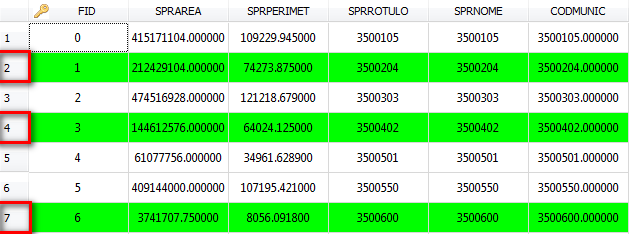
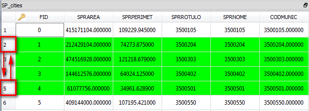
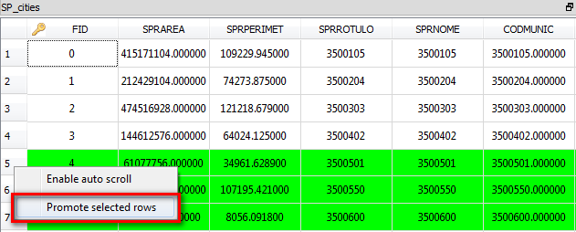
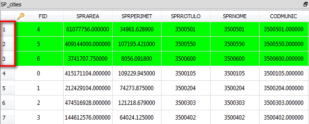
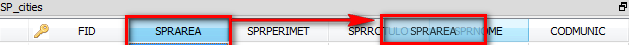
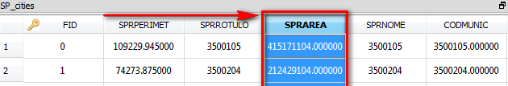

Basic
Features
The basic features to manipulate a
data table are:
Line
Selection
- To select one line (row) in a data
table, just click on the index positioned in the left side of the row.
Multiline selection (not sequential)
- To select multiple lines, press and hold Ctrl key an click on the indexes of the
rows to select them (the index is positioned to the left of the data table).

Multiline selection (sequential)
- To select multiple rows in sequence, just click on the index of the first row, press and hold the Shift Key and click on the index of the last row (or vice-versa).

Promote
selected rows
- To promote the selected rows and show all of them at the top of the table it is necessary to enable this facility.
- To enable/disable it - right-click over any point of the index column and click over Promote selected rows.
- Check on the top of the table to see the promote selected rows as showed bellow.


Columns selection
- To select a column, just
click on the column name, or any cell in that column, and see the column highlighted.
Change order of columns
- To change the order of
columns, just drag and drop the column header to the desired
position between two columns, as shown in the figure.

